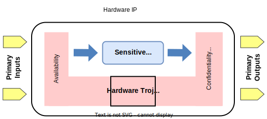
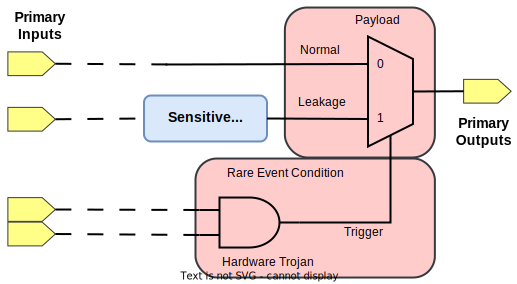
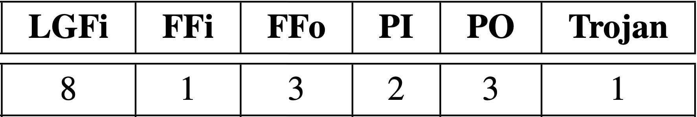
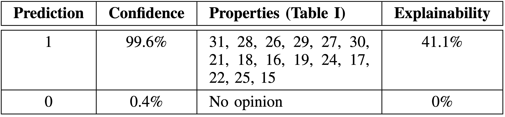
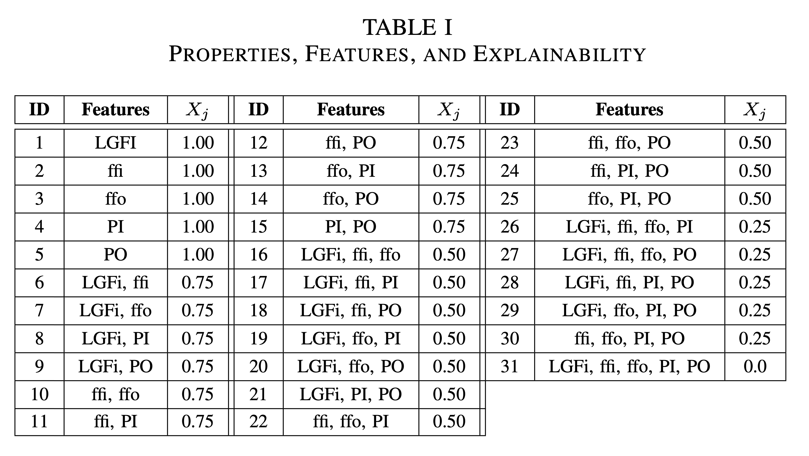
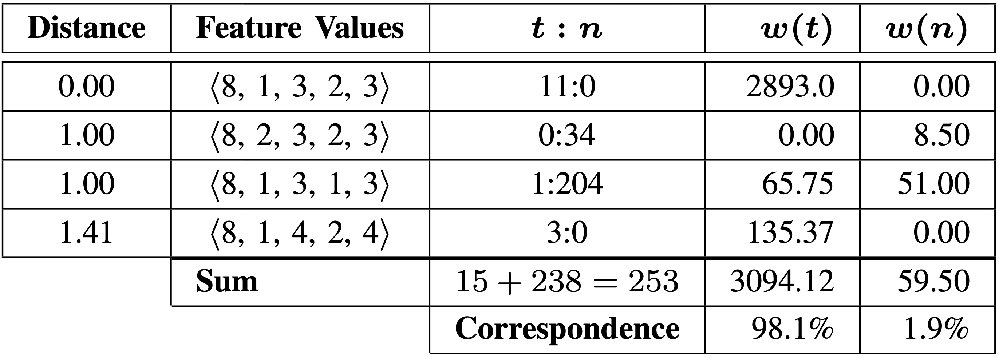

An AI Architecture with the Capability to Classify and Explain Hardware Trojans
Case Western Reserve University
Outline
- Introduction
- Problem
- Contributions
- Data Processing
- Property-Based Explainable Architecture
- Case-Based Explainable Architecture
- Explainable Examples
- Conclusion
Introduction
- Hardware (HW) trojans injected into Intellectual Property (IP)
- Third party vendors and processes could introduce trojans
- Existing Machine Learning (ML) techniques to detect trojans
- ML cannot effectively explain or justify decisions
- Goal is to introduce and compare:
- Explainable property-based architecture
- Explainable case-based architecture
CIA Impact Model
- Hardware Trojan compromises:
- Confidentiality
- Integrity
- Availability

Rare Event Hardware Trojan

Problem
- Static trojan detection using netlist features
- LGFi - Logic gate fanin
- FFi - Flip-flop input
- FFo - Flip-flop output
- PI - Primary input
- PO - Primary output
- Highly imbalanced dataset
- ML trained to make decisions
- Trust in the decisions is lacking - Need Explanations
Contributions
- Flow for processing netlists and extracting features
- Property-based explainable architecture
- Case-based explainable architecture
- Results of explainable architecture
- Contrast and comparison of explainable architectures
Data Processing

- 15 Trust-hub netlists - 52k entries
- 80% used for training
- 20% used for test
Property-Based Explainable Architecture


Property = grouping of features
Property Explainable Example
Sample
Output
Properties
Case-Based Explainable Architecture

Case Explainable Example
Sample
Output
Conclusion
- Explainable properties difficult to elicit from low dimensional space
- Marginal explainability in property-based architecture
- Property-based is a system
vs. case-based has distinct inference and neighbor - Case-based architecture had 94.7% correspondence with inference engine
- Case-based outperformed the property-based architecture